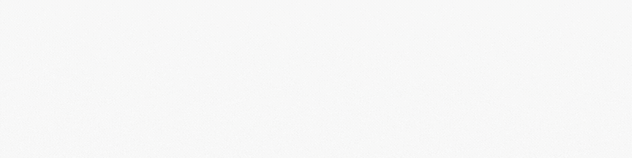
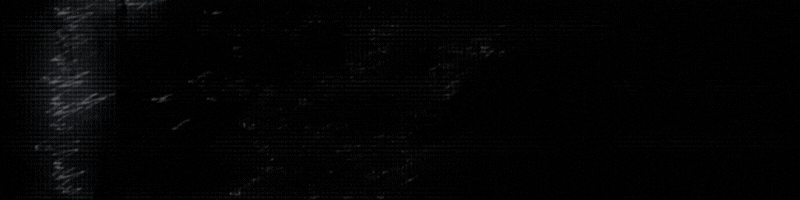
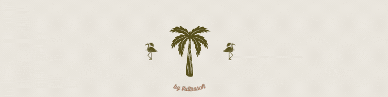

Task Tracker
Built using React, JS, Node.js, HTML, CSS and Netlify. May, 2021
Add, Edit and Track your daily or weekly tasks with this Task Tracker application I created using React.js(create react app), HTML5, JavaScript, CSS and Netlify.
A remake of PONG - JavaScript.
Built using JavaScript, HTML and CSS, June, 2021
A basic Table Tennis game coded using JavaScript by Mat Lawton.
Global Weather Application
Built using JavaScript, HTML, CSS and a fetch weather API, July, 2021
I made a weather application that shows you the weather in any city around the world using Javascript, HTML, CSS and a fetch weather API.